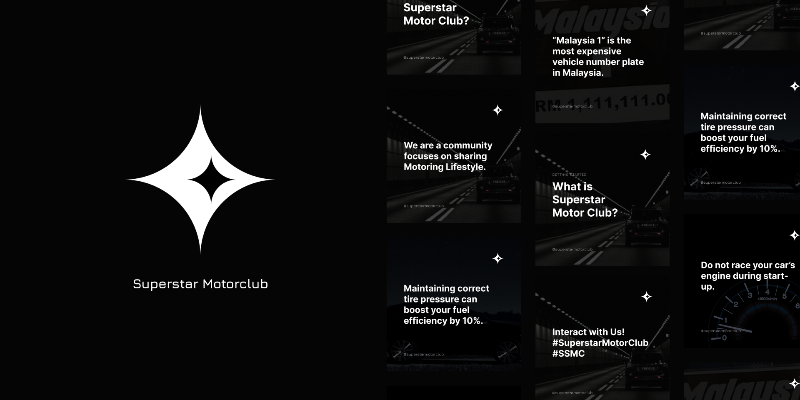

Superstar Motorclub
By Aden Chan
Superstar Motorclub is a community page dedicated for car enthusiast. My role is to design a full set visual design system for Superstar Motorclub included logo creation, color selection and font selection. Honestly, this was my first time to ever create a logo and I used simple shape to create and form this simple yet modern logo as the company requested and I glad it all worked out. All the rest design will be surrounded with this logo that’s why I took some time to make the logo and I made several different versions of logos for the company to choose from.
Throughout the project I have learned the importance of digital marketing and familiar myself with types of digital marketing tools such as Instagram, Facebook and how to improve business with it. Next, I also designed a full set of visual design system for the company such as Instagram and Facebook post template in different sizes, font, and color selection. More, I also learned how to design and create modern logo that easy to remember and easy to scan as well, as great logo supposes to be.